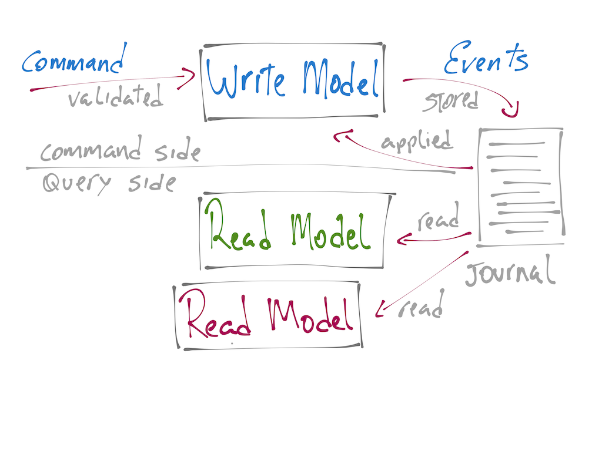
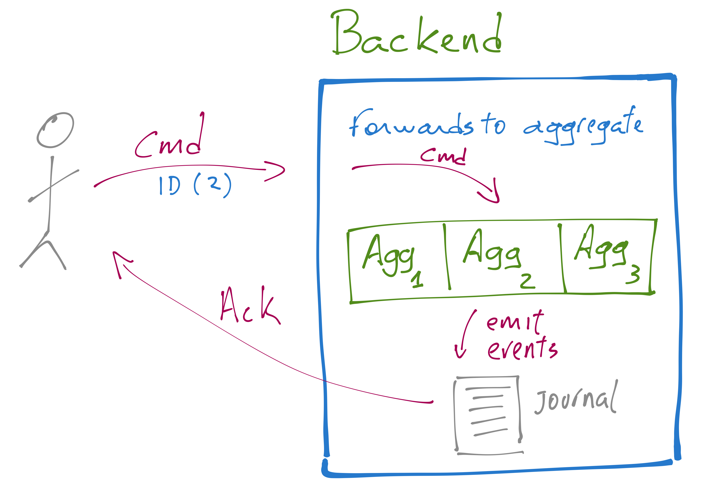

name: inverse layout: true class: center, middle, inverse --- # Functional Event Sourced Apps #with Fun.CQRS [strongtyped/fun-cqrs-workshop-lite](https://github.com/strongtyped/fun-cqrs-workshop-lite/) [strongtyped/fun-cqrs-workshop-lite-slides](https://github.com/strongtyped/fun-cqrs-workshop-lite-slides/) ??? TODO: Slide about Backends Slide about akka-persistence Slide about Projection and OffsetPersistenceStrategy Why is becoming popular? https://jazzy.id.au/2016/10/08/cqrs-increases-consistency.html --- # Before we start ... ```bash git clone git@github.com:strongtyped/fun-cqrs-workshop-lite.git ``` --- layout: false .left-column[ # Agenda ] .right-column[ 1. Introduction to CQRS and Event Sourcing 2. Fun.CQRS, high level feature overview 3. Write model design (configuring and testing) 4. Read model design (configuring and testing) ] --- class: left, top # What is CQRS? ## Command Query Responsibility Segregation - two models: - **Command** (or **Write**) model - **Query** (or **Read**) model - the write side **receives commands** and **emits events** - the read side **consumes events** and (typically) **generates views** - commands represent what *will happen in the future* - more correctly: what *may or may not* happen in the future - events represent what *has happened in the past* - no doubt here: what *surely* has happened in the past ??? Commands are written in the imperative tense and they reveal an intention. `CreateOrder`, `AddItem`, `CancelOrder`, etc. They may be rejected, silently ignored (zero events) or emit one or more events. Events represent what has happened and therefore are always written in the past tense. TODO: rephrase sentence over commands. (intention) --- layout: false # What is ES? ## Event Sourcing - **ES** records each event to an **Event Log** (a.k.a. **(Event) Journal**) - The event log is the *single source of truth* - The event log is *append-only* --- layout: false # What is CQRS/ES? - ES is very often used in combination with CQRS - **CQRS/ES** is a very powerful paradigm ??? Synchronous vs. Asynchronous CQRS What about multiple views? And what about contention? Event source makes CQRS scale. 1. naive async: cron-job that reads the write-model and generates read-model. Very inefficient and write-model must have all data that read-model needs. 2. sync: write-model and read-model together in same tx. What we do when we have many read-models? Over different storages? Contention not solved. 3. async: event sourcing - event journal TODO: add some more bulletpoints --- # What is an Aggregate? - It's a **DDD** (Domain Driven Design) concept - related to a **Consistency Boundary** - For **CQRS** the consistency boundary corresponds to the **commands** - For **CQRS/ES** the consistency boundary corresponds to the **events** - commands can be *accepted* or *rejected* ??? In CQRS the commands side or write-model, not the commands, guarantees that the consistency boundary is respected. The write-model has strict consistency. Last item is not clear. Events are not the consistency boundary. TODO: fusion with next slide --- # Aggregate responsibilities. - An aggregate somehow decides if a command is accepted or rejected - think of it as a *guardian* of a consistency boundary - An aggregate somehow represents *the history of past events* - think of it as the *accumulator* of a *traverse* over all past events --- # Big Picture  --- # Fun.CQRS - It's a minimal framework for CQRS/ES in Scala - It tries to define an opiniated Functional Foundation for CQRS/ES - As of today, it has two backend implementations: - **InMemoryBackend** (tests) and **AkkaBackend** - Based on `F[_]` **Interpreters** (more on that soon) --- # More Fun.CQRS - `Actions` - define how `Command`'s are rejected or handled - define how `Event`'s are handled - are used to define the `Behavior` of an `Aggregate` - `Projection`'s - are used to do whatever you want with persisted `Event`'s --- # Command Handlers and Interpreters - **Command Handlers** may return: - None, one or many **Events** - Unboxed (`Identity`) - Boxed in: `Future`, `Try` or `Option` - The `Backend` defines the final effect `F[_]` - for the `InMemoryBackend` `F` is `Identity` - for `AkkaBackend` `F` is `Future` - The role of an `Interpreter` is to transform the Command Handler return type to the target `F[_]`. ??? It's important to explain that other types can be supported. This is also a good opportunity to talk about `Identity` TODO: add slide with code fragments of `eventually.OneEvent`, `attempt.OneEvent`, `maybe.ManyEvents`, etc Back to the basis, a `Command` can fail, an `Event` is always applied. --- # Backend  ??? The backend is a dirty impure world --- class: center, middle, inverse #Short Demo before the hacking starts ??? Run a short demo of the order app --- class: center, middle, inverse #Order App A classical shopping cart application. <a href="https://github.com/strongtyped/fun-cqrs-workshop-lite/" target="_blank"> Available @ strongtyped/fun-cqrs-workshop-lite </a> --- # Before we start ... ```bash git clone git@github.com:strongtyped/fun-cqrs-workshop-lite.git # Please, don't tell me you haven't done it yet cd fun-cqrs-workshop-lite # start sbt sbt ``` ### In sbt prompt ```sbt groll initial ~test ``` ... and later on ```sbt groll next ~test ``` --- #Step 1 Implement 'creation actions' and 'EmptyOrder' behavior ###`EmptyOrder` First state once we initialize the **Order Aggregate**. It has not items. - we call the 'creation actions' the **Command** and **Event Handlers** needed to bootstrap the **Aggregate** (open to Order.scala). - 'EmptyOrder' behavior must be implemented in `EmptyOrder.possibleActions` - Accepts AddItem and CancelOrder commands. - Requires interaction with the 'fake' `StockService` ??? It can be useful to code this first actions together with the studends. Specially because of command handlers returning `Future`, ie: `eventually.OneEvent` TODO: think about how to best start the hacking part. Should we do a first example with the students? --- #Step 2 ### `NonEmptyOrder` A non-empty order has at least one item. - Head to `NonEmptyOrder.possibleActions` - `AddItem` and `RemoveItem` items must interact with `StockService` - `CancelOrder` as well - `PayOrder` must interact with `BillingService` If all items are removed, `NonEmptyOrder` transition back to `EmptyOrder` state. --- #Step 3 `PayedOrder` and `CancelledOrder` behavior `PayedOrder` and `CancelledOrder` cannot accept any new commands and therefore is considered to have reached its end-of-life. How can we deal with that? tip: use `rejectCommand` method. Watch-out the kind of function it accepts! --- #Step 4 Up to now we have only worked on the **Command Side**. A **Projection** is basically a `PartialFunction[DomainEvent, Future[Unit]].` Often used to generate **Views**, but can also be used for intra **Aggregate** communication. Head to `OrderDetailsProjection` --- #Step 5 How to initialize an Order using the `AddItem` command? Can we emit a list of Events List(OrderWasCreated, ItemWasAdded) in the 'factory actions'? Let's break the tests and see how we can fix it. Pick one of the test and comment out the 'creation' commad. ```scala // orderRef ! CreateOrder ``` --- # Thanks! *documentation* [www.funcqrs.io](http://www.funcqrs.io) *email* renato@strongtyped.io / luc@strongtyped.io *twitter* [@strongtyped](http://twitter.com/strongtyped) [@renatocaval](http://twitter.com/renatocaval) / [@lucdup](http://twitter.com/lucdup)